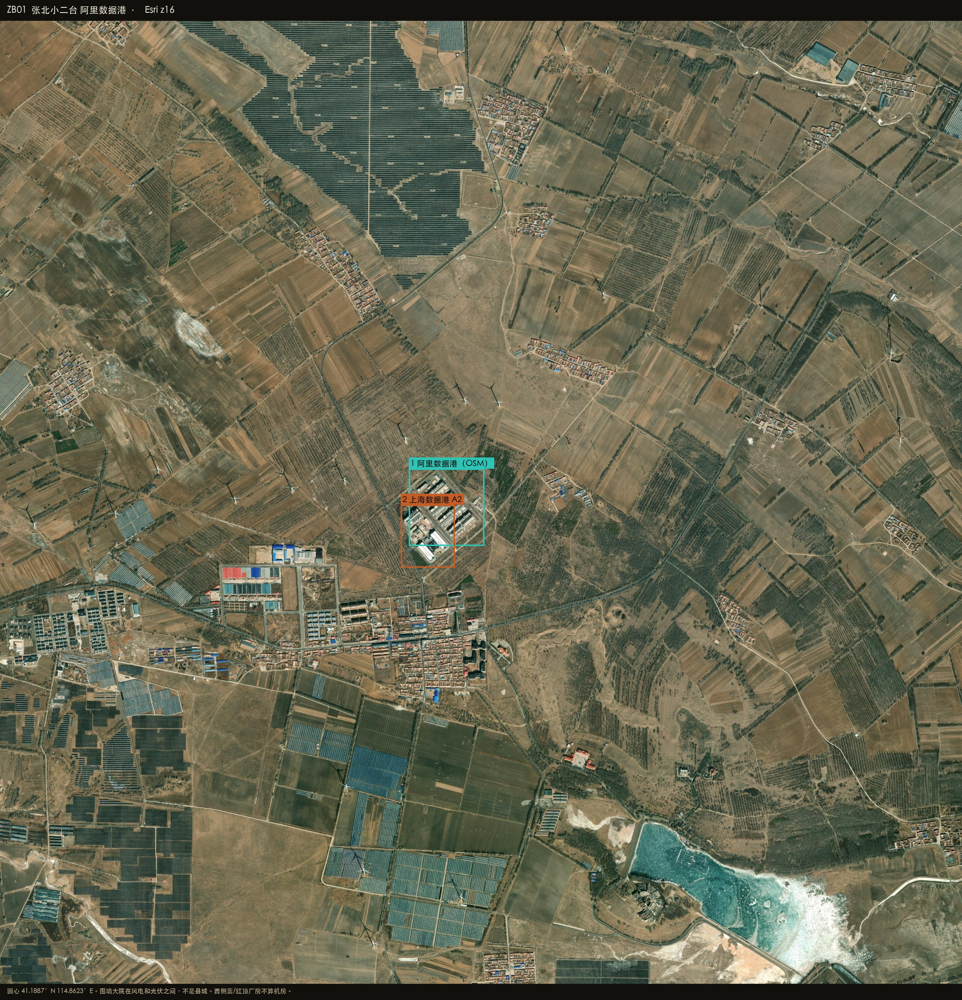
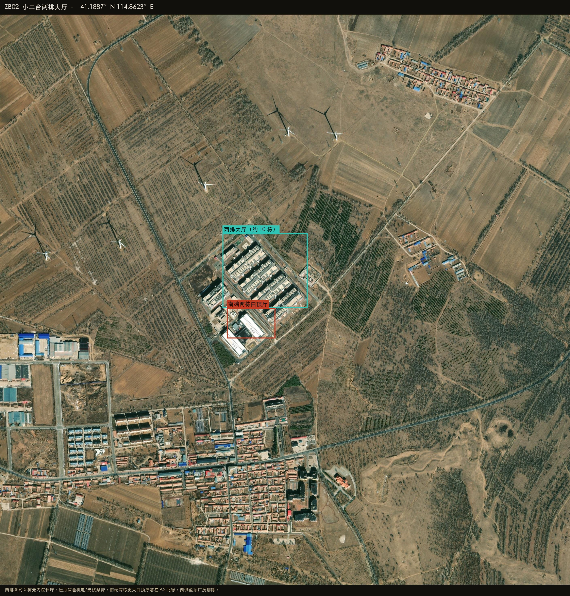
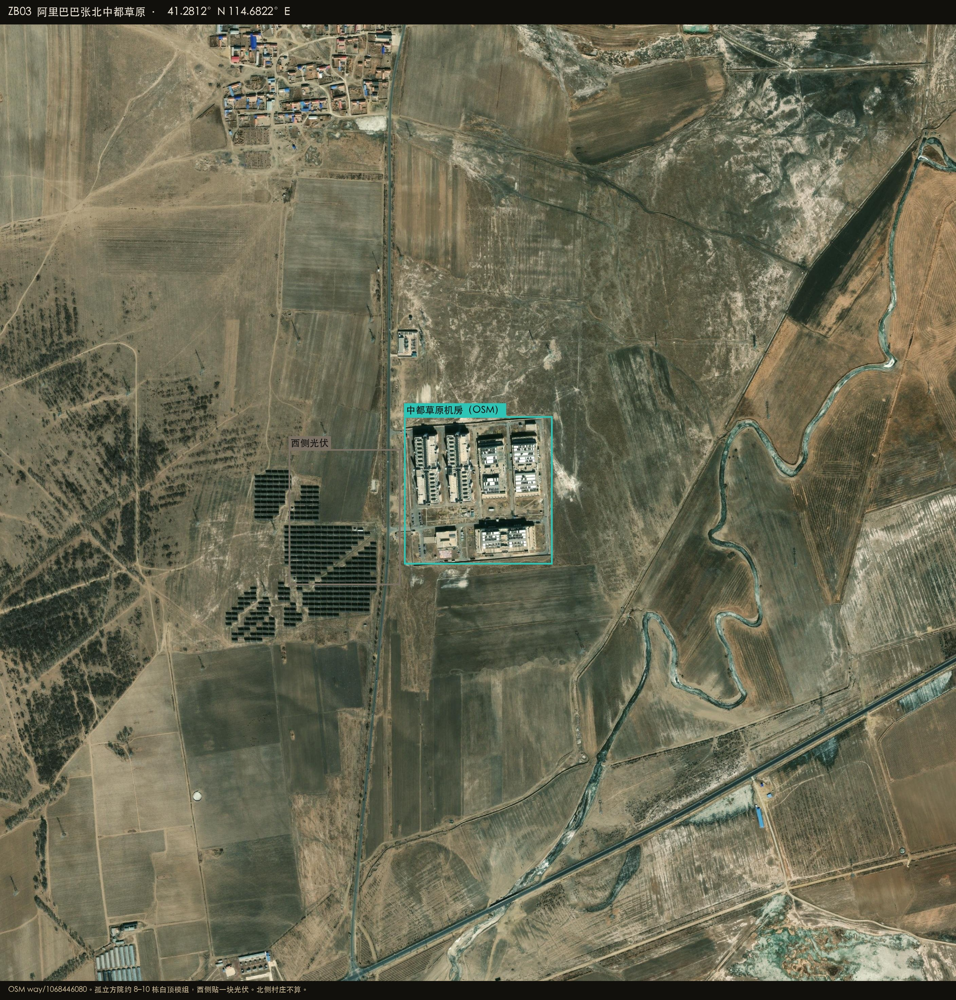
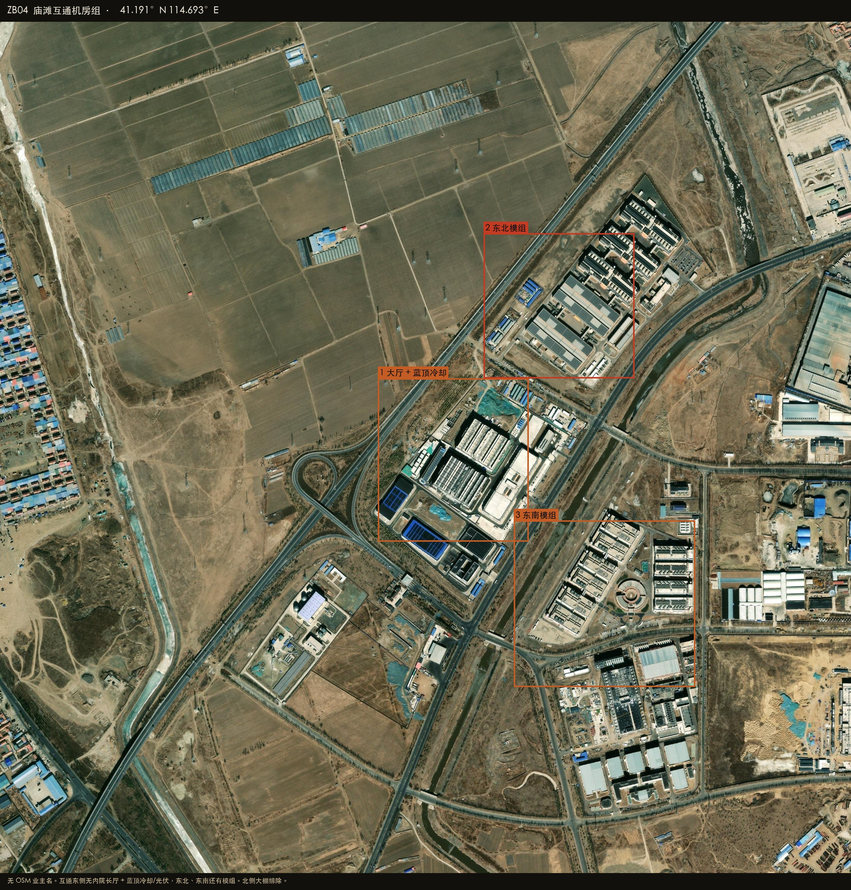
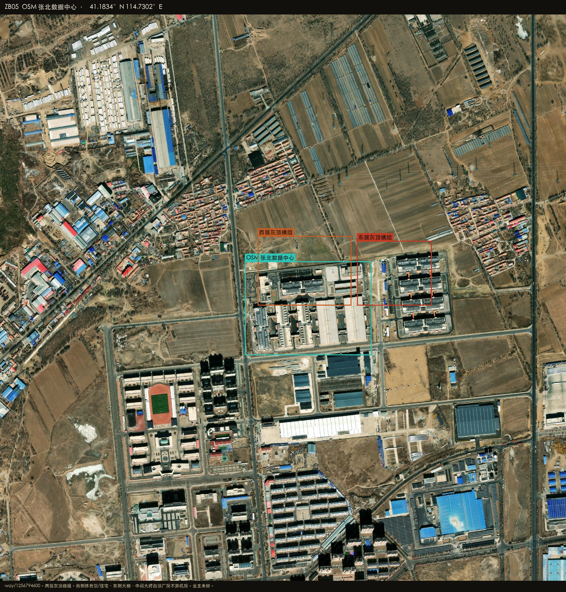

Datacenter Probe · 张北41.1887°N 114.8623°E · r = 50 km
Esri World Imagery · 2026-08-27
Satellite reconnaissance · Hebei
张北周边数据中心建设情况
张北的机房不在县城里。圆心取 OSM way/699984315 阿里数据港：小二台围墙里两排各约五栋无内院长厅，南端两栋更大白顶。馒头营东、中都草原南还有一处孤立方院，约八到十栋白顶模组。县城北高速互通旁（庙滩）和 OSM 具名「张北数据中心」另有两组大厅，业主未钉。腾讯、秦淮的公开项目在怀来，不写入张北。

HERO · 小二台 · OSM 阿里数据港 / 上海数据港 A2
底图 Esri World Imagery（WGS84）
ZB-DATAPORT · 两排大厅
OSM 两块相邻工业用地。两排各约 5 栋无内院长厅，南端两栋白顶厅。
高置信 · 已投运
ZB-ALI-ZHONGDU · 8–10 栋
OSM 具名孤立方院。白顶模组 + 西侧光伏。
高置信 · 已投运
ZB-MIAOTAN · 互通旁
无 OSM 业主。多组无内院长厅 + 蓝顶冷却/光伏，大厅算机房。
高 · 形态 / 候选 · 业主
ZB-OSM-DC · 县城北
OSM way/1256794600。两簇灰顶模组；体育馆/大棚/大跨厂房排除。
中高 · 业主未标
41.1887°N 114.8623°E
小二台阿里数据港
小二台数据街。OSM：阿里数据港张家口张北数据中心 + 上海数据港张北A2。河北日报 2025-06 把灰色与橘色建筑写成阿里数据港，是线索不是牌匾。
高置信 · 已投运
两排各约 5 栋无内院长厅，屋顶深色机电/光伏条带（41.1876–41.1906N 114.8601–114.8646E）
南端两栋更大白顶厅落在 A2 多边形北缘
西侧蓝/红顶厂房按仓储/工厂排除
阿里巴巴 上海数据港
在 Google 卫星图打开 ↗

PLATE ZB02 · 小二台大厅 · Esri z17
PLATE ZB01 · 总图 · 风电光伏之间
41.2812°N 114.6822°E
中都草原
馒头营乡以东。OSM way/1068446080 阿里巴巴张北中都草原数据中心，41.2794–41.2830N 114.6798–114.6845E。
高置信 · 已投运
孤立方院约 8–10 栋白顶矩形模组，屋顶设备条带
西侧贴一块光伏，本身不是机房
形态与报道里阿里「一点三中心」的中都草原备份点一致
阿里巴巴
在 Google 卫星图打开 ↗

PLATE ZB03 · 中都草原 · 41.2812°N 114.6822°E
41.1910°N 114.6930°E
庙滩 / 县城北
庙滩村东南、县城北高速互通旁。无 OSM 业主名。东 2.7 km 是 way/1256794600 张北数据中心。
高 · 是机房 / 候选 · 业主
互通东侧无内院长厅 + 蓝顶冷却/光伏（41.1875–41.1919N 114.6915–114.6968E）
东北、东南还有模组；北侧大棚不计
OSM「张北数据中心」两簇灰顶模组，体育馆/住宅/大跨白顶厂房排除
阿里云联/庙滩、万国、榕泰都只是报道线索
业主待核
在 Google 卫星图打开 ↗

PLATE ZB04 · 庙滩互通 · 业主待核
41.1834°N 114.7302°E
张北数据中心（OSM）
县城北、距庙滩互通约 2.7 km。OSM way/1256794600 landuse=industrial，41.1815–41.1853N 114.7268–114.7336E。无 operator 标签。
中高 · 是机房 / 业主未标
两簇灰顶模组大厅、屋顶深色条带（西簇 41.1835–41.1863N 114.7275–114.7325E；东簇 41.1835–41.1861N 114.7328–114.7368E）
南侧体育馆/住宅、东侧大棚、中间大跨白顶厂房排除
万国/榕泰/阿里庙滩二期都只是报道线索
业主待核
在 Google 卫星图打开 ↗

PLATE ZB05 · OSM 张北数据中心 · 业主未标
怎么判，什么不算
圆心在小二台园区，不在张北县城。中都、庙滩相距十余公里，不能指望一张 z16 总图罩住。
算作机房
无内院矩形大厅、屋顶机电/光伏条带、模块化并排 OSM 具名 industrial（数据中心/数据港） 明确排除
蓝/红顶仓储厂房 体育馆、住宅、大棚、大跨白顶厂房 风电和光伏阵列本身 腾讯/秦淮（在怀来，不写入张北） 在 Google 卫星图打开圆心 ↗
五座城
贵安 · 乌兰察布 · 阳泉 · 中卫 · 克拉玛依
续卷
张北 · 怀来 · 庆阳 · 和林格尔 · 韶关 · 芜湖
Datacenter Probe · 张北 · 标注截图仅供复核，不是权属证明。
影像 © Esri, Maxar, Earthstar Geographics。续卷 · 东数西算枢纽，不是 2022 智东西原文里的五座城。
关闭